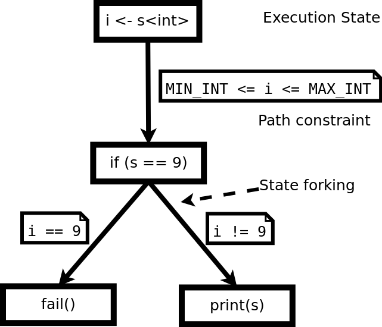
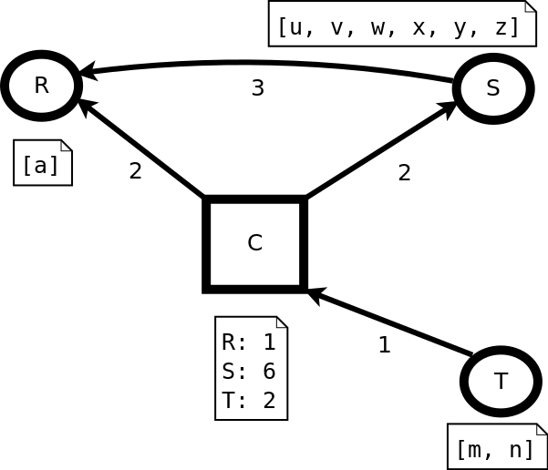
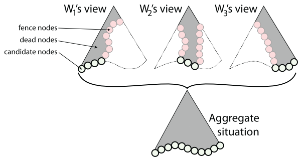

Testing as a service:
making a vision tangible
Presented by Per Fuchs
Course Advanced Topics in Distributed Systems 2018
Bigger software == more bugs
- average bug density stayed constant
- but average code volume increases exponentially
- software steers evermore important processes in our society e.g. micro trading
Automated software testing as a service (TaaS)
- fully automated testing by a service provider
- on managed infrastructure
- saving developing time and money
- makes software reliability comparable and promotes open competition along this metric
Making TaaS tangible: Structure
- preliminaries: what is symbolic execution?
- a concrete example on how to build TaaS for PaaS
- solution for a technical challenge: parallelize symbolic execution
- TaaS a disruptive technology
Symbolic Execution
i = get_int()
if (i==9):
fail()
else:
print(i)

TaaS by PaaS providers
One possible implementation of TaaS
TaaS by PaaS providers
- PaaS providers are well positioned to also simplify the integration testing of apps
- they already provide the setup of dependencies for integration testing
- but leave the developer with the hard task to handcraft requests for each test scenario
- this is a tedious task even more so because of the layered architecture of modern web apps


- Defines inputs and their structure
- Retrieves concrete input
- Concretely and symbolical executes request in parallel
- Repeat steps with new input generated by negating path constraints
Intuition behind the idea
- automates valid input generation to cover whole families of inputs
- deals with path explosion by executing only single paths symbolically
- uses layering structure to focus testing on interesting parts
- furthermore, the paper provides how to setup a testing machine given a production machine
- basically wrapping a production machine in a symbolic VM
Parallel symbolic execution
One general approach enable symbolic execution of real world programs
Parallel symbolic execution, rewards and problems
- parallelize symbolic execution on large clusters of commodity hardware
- share nothing architecture
- to alleviate high memory consumption due to path explosion
- to distribute CPU intensive path constraint solving
- mostly a load balancing problem
System overview and load balancing

- Systems consists out of one coordinator (C) and multiple worker (R, S, T)
- one job == one execution state
- each worker maintains a work queue
- they update the coordinator about the length of their queue (1)
- the coordinator issues requests to balance work (2)
- workers exchange jobs (3)
Challenges in load balancing
- space-efficient job encoding for low bandwidth networks
- no duplicated work
- completeness of the execution tree
Complete and non-redundant partitioning an intuition

- each worker explores its local subtree
- there are three kind of nodes:
- Candidates: to be explored
- Fence states: explored by another node
- Dead states: completely explored
Complete and non-redundant partitioning an intuition
- Complete
- initially all children of the root state are allocated
- each new state is a candidate
- candidates become either
- dead when they are fully explored
- fence when send to another worker but they will be candidate there
Complete and non-redundant partitioning an intuition
- Non-redundant
- initially the sets of candidates on different nodes is intersection
- Work transfer keeps them intersection free
- Exploration never creates the same state twice
Conclusion
- the paper describes
- a parallelized version of symbolic execution
- that scales linearly
- on share-nothing cloud architecture
- and further contributions, e.g. symbolic environments or implementation of a testing API